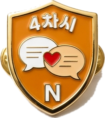
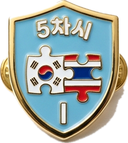
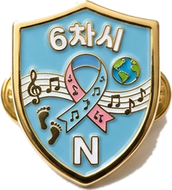

무.도.키즈는요
연구회
AI의 편리함 속에서 약해질 수 있는 공감, 협력, 비판적 판단 같은 사람 고유의 휴먼스킬에 주목한 초등 교사연구회입니다. 학생들이 AI를 무비판적으로 받아들이지 않고, 기술을 주체적이고 책임 있게 쓰도록 돕는 AI 융합 수업을 연구합니다.
연구 내용
초등 5~6학년 학생이 생성형 AI와 엔트리 AI를 직접 써 보며 AI의 쓸모와 한계를 탐색하는 10차시 프로그램입니다. AI의 오류와 감정적 한계를 따져 보고, 사람과 AI의 역할을 나눠 학교·공동체 문제를 기획하고, 공감·협력·윤리적 판단으로 ‘인간다운 도움’을 실천합니다.
어떤 문제에서 출발했나요?
“챗봇의 뻔하고 기계적인 위로에 더 큰 소외감과 외로움을 느꼈다.”
교실에서 들은 학생의 말
학생들은 AI에게 답과 위로를 쉽게 구하지만, 그 답이 틀리거나 자기 마음을 제대로 이해하지 못해도 왜 그런지 살펴보지 못한 채 받아들이고 있습니다.
학생이 생성형 AI와 직접 대화하고 그 답을 사람의 위로·자신의 판단과 비교해 보지 않으면, AI가 말은 만들어도 감정과 상황까지 이해하지는 못한다는 한계를 실제로 알기 어렵습니다.
AI의 답을 편리한 정답으로 받아들이던 학생이, 그 답이 사실인지·마음에 맞는지 스스로 살피고 AI가 놓친 부분에 자신의 공감과 판단을 더하는 학생으로 바뀝니다.
RUNNING MAN 10차시
나를 존중하는 데서 시작해 친구, 학교, 다른 나라 친구들까지 — 차시마다 머리글자 하나씩 모으며 달립니다. 카드를 누르면 주요 활동이, 수업 열기를 누르면 수업 PPT·활동지·수업 안내가 있는 차시 화면이 열려요.
 1차시 · Respect
서로 존중하기
사람과 AI를 대할 때 존중은 왜 필요할까?
주체성사회·관계적 사고
1차시 · Respect
서로 존중하기
사람과 AI를 대할 때 존중은 왜 필요할까?
주체성사회·관계적 사고
- AI를 함부로 대하는 장면, AI가 감정을 잘못 읽은 사례로 존중의 대상과 범위 생각하기
- 가치 카드로 나에게 중요한 가치를 고르고 짝과 우선순위 비교하기
- “AI를 대하는 태도는 사람 사이의 관계와 어떤 관련이 있을까?” 의견 나누기
- 존중받았던 경험을 나누고 모둠별로 ‘존중이란 ___ 하는 것이다’ 문장 만들기
 2차시 · Understand
인간과 AI 이해하기
AI는 무엇을 잘하고, 어떤 점을 확인해야 할까?
비판적 사고
2차시 · Understand
인간과 AI 이해하기
AI는 무엇을 잘하고, 어떤 점을 확인해야 할까?
비판적 사고
- AI 생성 그림 속 직업·가족의 모습에서 숨은 편견 찾기
- 역할 카드를 ‘AI가 잘하는 일 · 사람이 책임질 일 · 함께할 일’로 분류하기
- 편향을 줄이는 프롬프트로 고쳐 쓰고, 교사 시연으로 처음 결과와 비교하기
- “AI의 답을 믿기 전에 나는 ___을 확인하겠다” 문장 완성하기
 3차시 · Notice
문제 알아차리기
「원숭이 꽃신」으로 편리함과 의존의 관계 살펴보기
문제해결 사고호기심
3차시 · Notice
문제 알아차리기
「원숭이 꽃신」으로 편리함과 의존의 관계 살펴보기
문제해결 사고호기심
- 길찾기 앱만 따라가다 주변을 못 살핀 상황으로 이야기 열기
- 「원숭이 꽃신」을 읽고 꽃신이 준 편리함과 원숭이가 잃은 것 비교하기
- 오소리·원숭이·꽃신·발바닥을 AI 시대와 연결해 여러 해석 만들기
- “AI 시대에 내가 잃지 말아야 할 발바닥은 ___이다” 문장 완성하기

4차시 · Need empathy
공감하기
상대의 마음에 닿는 위로는 어떤 모습일까?
직관적 통찰
- 같은 고민에 대한 위로 글 두 편에서 감정 인정·상황 이해·구체적 도움 등 공감 요소 찾기
- 고민 상황 카드로 해결책 제시·감정 인정·질문하기·말없이 곁에 있기 역할극
- 상황에 맞는 위로 문장을 만들어 학급 ‘위로 대사집’에 모으기

5차시 · Interact
협력하기
사람과 AI, 그리고 다른 나라 친구들은 어떻게 협력할 수 있을까?
창의적 사고사회·관계적 사고
- 태국 Prasarnmit 초등학교 친구들과 나누고 싶은 마음 정하기
- 공동 춤 뮤직비디오와 씨앗 그림·편지 초안 구상하기
- AI가 도울 일(아이디어 제안)과 우리가 직접 정할 일(의미·최종 표현) 나누기
- 국제교류 예절과 개인정보 보호 방법 확인하기

6차시 · Network
공동체 연결하기
춤과 음악은 어떻게 우리를 연결할까?
윤리적 사고성찰적 사고
- 한국과 태국의 춤·음악에서 공통점과 차이점 찾기
- 공동 뮤직비디오에 담을 메시지와 각자의 역할 정하기
- AI 번역을 쓸 때 다시 확인하기·개인정보 넣지 않기 등 지킬 점 정하기
 7차시 · Grow together
함께 성장하기
함께 만든 결과물에는 어떤 배움이 담겨 있을까?
성찰적 사고통합적 사고
7차시 · Grow together
함께 성장하기
함께 만든 결과물에는 어떤 배움이 담겨 있을까?
성찰적 사고통합적 사고
- 한국·태국 학생이 함께 공동 뮤직비디오 만들기
- Zoom 실시간 번역과 춤·표정으로 한 소통의 장점과 한계 비교하기
- 친구의 기여를 구체적인 행동으로 적어 전하고 배운 점 나누기
 8차시 · Mission
실천하기
그림과 편지로 서로의 마음을 어떻게 전할 수 있을까?
직관적 통찰문제해결 사고
8차시 · Mission
실천하기
그림과 편지로 서로의 마음을 어떻게 전할 수 있을까?
직관적 통찰문제해결 사고
- 한지에 붓으로 감정을 표현해 꿈과 바람을 담은 씨앗 그림 만들기
- AI는 아이디어 탐색에만 쓰고, 그림과 편지는 직접 고르고 다듬어 완성하기
- 태국어 인사·응원 표현을 넣은 손편지 쓰기
- AI 그림과 내 그림을 감정 전달·정성·개성의 눈으로 비교하기
 9차시 · Action
행하기
교류에서 나눈 마음을 어떤 행동으로 이어갈 수 있을까?
주체성윤리적 사고
9차시 · Action
행하기
교류에서 나눈 마음을 어떤 행동으로 이어갈 수 있을까?
주체성윤리적 사고
- 태국 친구에게 받은 그림·편지에서 새로 알게 된 점 나누기
- 도움받을 사람의 뜻을 먼저 묻고 교실 속 공동체 도움 활동 계획·실천하기
- 책임 있는 AI 활용을 위한 학급 약속 만들어 게시하기
10차시 · New Future 미래 만들기 AI 시대에 나는 어떤 사람으로 살아가고 싶은가? 성찰적 사고적응성
- 프로젝트 결과물을 다시 보며 처음과 지금의 나 비교하기
- “AI 시대, 나는 어떤 인간으로 살아갈 것인가?” 미래 선언문 쓰기
- 선언문을 발표하고 친구의 변화와 강점을 구체적인 장면으로 격려하기
RUNNING MAN이 키우는 휴먼스킬
AI가 대신하기 어려운 사람의 힘 가운데 11가지를 10차시에 나누어 키워요. 차시마다 휴먼스킬 1~2개를 정해 알기 · 하기 · 가치로 수업을 짜고, 같은 기준으로 평가해요.
● 그 차시에서 집중해서 키우는 휴먼스킬. 글자를 누르면 차시 화면이 열려요. 사전·사후 설문에는 휴먼스킬 틀에 있는 호기심도 들어 있어요(특정 차시 없이 프로젝트 전체에서 봐요).
아래 한 줄 풀이는 학생에게 설명하기 쉽게 쓴 것이고, 카드를 펼치면 차시별 지도안의 알기·하기·가치가 나와요.
사회·관계적 사고다른 사람의 생각과 감정을 존중하며 좋은 관계를 맺는 힘 1차시 R5차시 I
1차시 · 서로 존중하기
- 알기
- 상호 존중 — 나와 다른 존재의 생각·감정·가치를 인정하고 관계를 맺는 것
- 하기
- 서로 다른 가치관을 비교하고, 타인의 경험과 감정을 경청하며 존중의 의미를 설명하기
- 가치
- 사람과 AI를 포함한 다양한 존재를 함부로 대하지 않고 존중하려는 자세
5차시 · 협력하기
- 알기
- 사람과 AI의 협력에는 편리함뿐 아니라 공정성·책임·관계에 대한 고려가 필요함
- 하기
- AI가 도울 수 있는 일과 사람이 판단해야 할 일을 구분하고, 공동체에 미칠 영향을 설명하기
- 가치
- AI 활용 과정에서도 사람의 존엄·관계·책임을 소중히 여기는 자세
설문 문항 “나는 친구의 생각과 감정을 끝까지 듣고 존중해요.” · “생각이 다른 친구와도 함께 해결 방법을 찾을 수 있어요.”
주체성내 생각과 판단을 스스로 세우고 책임 있게 선택하는 힘 1차시 R9차시 A
1차시 · 서로 존중하기
- 알기
- 자기 이해 — 자신의 가치와 판단을 인식하고 책임 있게 선택하는 것
- 하기
- 존중의 대상과 범위에 관한 자신의 생각을 근거와 함께 표현하고, 다른 의견을 검토하기
- 가치
- 타인의 의견을 존중하면서도 자신의 판단을 주체적으로 형성하려는 자세
9차시 · 행하기
- 알기
- 공동체를 돕는 실천은 상대의 필요를 살피고 내가 할 수 있는 일을 스스로 고르는 데서 시작됨
- 하기
- 도움 활동을 계획·실행하고, 자신의 역할과 실천 결과를 기록하기
- 가치
- 작은 일이라도 스스로 골라 실천하고 맡은 역할에 책임을 다하는 자세
설문 문항 “나는 내가 중요하게 여기는 가치를 알고, 그에 따라 스스로 선택해요.” · “AI나 친구의 말을 듣고도 내 생각을 까닭을 들어 말할 수 있어요.”
비판적 사고정보와 AI의 답을 그대로 믿지 않고 근거를 따져 보는 힘 2차시 U3차시 N
2차시 · 인간과 AI 이해하기
- 알기
- AI의 답변은 학습 데이터와 확률에 기반하므로, 사실과 다른 정보를 그럴듯하게 제시하거나 사회의 편견을 되풀이할 수 있음
- 하기
- AI 답변을 신뢰할 만한 자료와 비교하여 사실 오류·누락·편향된 표현을 찾아 고치기
- 가치
- AI의 결과를 정답으로 받아들이지 않고, 근거를 확인한 뒤 책임 있게 활용하려는 자세
3차시 · 문제 알아차리기
- 알기
- 문제를 해결하려면 겉으로 드러난 현상뿐 아니라, 그 안에서 어려움을 겪는 사람과 원인을 함께 살펴야 함
- 하기
- 이야기 속 인물과 사건을 AI 시대의 문제 상황과 연결하고, 원인과 영향을 근거를 들어 설명하기
- 가치
- 누군가의 어려움을 당연하게 여기지 않고 더 나은 해결 방법을 찾으려는 자세
설문 문항 “AI가 알려 준 답도 맞는지 다른 자료로 확인해요.” · “글이나 그림에 숨은 편견이나 빠진 생각을 찾을 수 있어요.”
맥락적 사고말과 상황 뒤에 숨은 뜻과 배경을 함께 읽는 힘 3차시 N
3차시 · 문제 알아차리기
- 알기
- 이야기 속 생략된 내용과 상징에는 더 깊이 생각해 볼 질문과 의미가 담길 수 있음
- 하기
- 인물·사물·사건에 대해 궁금한 점을 만들고, 글과 자신의 경험을 바탕으로 의미를 탐색하기
- 가치
- 처음 떠오른 해석에 머무르지 않고 "왜 그럴까?", "다른 방법은 없을까?"를 묻는 태도
설문 문항 “이야기나 사건에 숨은 뜻이 있는지 생각해 봐요.” · “같은 말도 상황에 따라 다르게 받아들여질 수 있다는 걸 알아요.”
직관적 통찰표정·분위기 같은 작은 신호에서 상대의 마음과 핵심을 알아차리는 힘 4차시 N8차시 M
4차시 · 공감하기
- 알기
- 공감은 말로 드러난 내용뿐 아니라 표정·상황·관계·감정의 흐름을 함께 살펴 상대의 마음을 알아차리는 것
- 하기
- AI와 사람이 제시한 위로의 차이를 비교하고, 상대의 감정과 상황에 알맞은 공감 표현을 골라 말이나 글로 나타내기
- 가치
- 정답처럼 보이는 조언보다 마음에 닿는 말의 가치를 알고, 타인의 어려움에 따뜻하게 반응하려는 자세
8차시 · 실천하기
- 알기
- 인간다운 도움은 말로 드러난 필요뿐 아니라 상대의 감정·문화·상황을 함께 살피는 데서 시작됨
- 하기
- 색·선·글·언어 표현으로 상대에게 전하고 싶은 감정과 응원을 표현하기
- 가치
- 다른 나라 친구의 마음과 문화를 존중하며 진심이 담긴 표현으로 관계를 맺으려는 태도
설문 문항 “친구의 말투나 표정을 보고 마음을 알아차릴 수 있어요.” · “상대의 마음에 닿는 말이나 표현을 고를 수 있어요.”
창의적 사고새로운 생각을 떠올리고 더 나은 방법을 설계하는 힘 5차시 I
5차시 · 협력하기
- 알기
- AI는 검색·분류·초안 작성 등에서 도움을 줄 수 있지만, 문제 해결의 방향과 의미는 사람이 창의적으로 설계해야 함
- 하기
- AI와 사람이 맡을 역할을 나누고, 새로운 협력 아이디어를 구상하기
- 가치
- AI를 정답 제공 도구가 아니라 더 나은 방법을 함께 만드는 협업 도구로 쓰려는 태도
설문 문항 “같은 문제도 새로운 방법으로 해결해 보려고 해요.” · “AI의 아이디어를 그대로 쓰지 않고 나만의 생각을 더해요.”
윤리적 사고나와 남, 공동체에 미칠 영향을 생각해 옳은 쪽을 고르는 힘 6차시 N9차시 A
6차시 · 공동체 연결하기
- 알기
- AI 사용은 개인의 편리함을 넘어 타인·공동체·지구촌에 영향을 줄 수 있음
- 하기
- AI 사용 상황을 존중·공정성·다양성의 관점으로 판단하고 근거를 들어 설명하기
- 가치
- AI를 쓸 때 나와 다른 사람의 권리와 입장을 존중하며 책임 있게 행동하려는 자세
9차시 · 행하기
- 알기
- 도움 활동과 AI 활용에서는 상대의 권리와 상황을 존중하고, 행동이 공동체에 미치는 영향을 생각해야 함
- 하기
- 상대의 의사와 개인정보를 존중하는 방법을 찾고, AI를 책임 있게 쓰기 위한 학급 약속을 만들기
- 가치
- 나의 편리함뿐 아니라 다른 사람에게 미칠 영향을 생각하며 약속을 지키려는 태도
설문 문항 “AI를 쓸 때 개인정보와 다른 사람의 권리를 지켜요.” · “내 행동이 다른 사람과 공동체에 어떤 영향을 줄지 생각해요.”
성찰적 사고내 경험과 배움을 돌아보고 다음을 더 낫게 만드는 힘 6차시 N7차시 G10차시 N
6차시 · 공동체 연결하기
- 알기
- 사람은 타인의 도움을 받으며 관계와 경험 속에서 성장하는 존재임
- 하기
- 나와 타인·학교·지역·지구촌의 연결을 돌아보고 자신의 AI 사용 태도를 성찰하기
- 가치
- 자신이 공동체에 미치는 영향을 생각하며 더 나은 관계를 위해 실천하려는 태도
7차시 · 함께 성장하기
- 알기
- 함께 성장하려면 자신의 배움과 협동 과정을 돌아보고 더 나아질 점을 찾아야 함
- 하기
- 협력 과정에서 자신의 역할·변화·부족했던 점을 돌아보고 실천 다짐으로 표현하기
- 가치
- 자신과 친구, 모둠의 성장을 소중히 여기며 더 나은 참여를 위해 노력하는 자세
10차시 · 미래 만들기
- 알기
- 성장은 결과뿐 아니라 생각·태도·관계의 변화를 돌아보는 과정에서 확인할 수 있음
- 하기
- 활동 기록을 바탕으로 개인과 모둠이 성장한 점을 찾고, 배운 점·느낀 점·실천할 점을 정리하기
- 가치
- 자신과 친구의 노력과 변화를 소중히 여기고 배움을 일상에서 이어 가려는 자세
설문 문항 “활동이 끝나면 내가 잘한 점과 고칠 점을 돌아봐요.” · “친구와 함께하며 내가 배운 것을 말할 수 있어요.”
통합적 사고여러 사람의 생각과 강점을 엮어 더 큰 답을 만드는 힘 7차시 G
7차시 · 함께 성장하기
- 알기
- 좋은 아이디어는 여러 사람의 강점·의견·경험이 이어질 때 더 발전함
- 하기
- 강점과 피드백을 바탕으로 공동 작업을 보완하고, 배운 내용을 연결해 설명하기
- 가치
- 서로 다른 의견과 강점을 합쳐 공동 결과물을 더 좋게 만들려는 태도
설문 문항 “여러 사람의 생각을 모아 더 좋은 결과를 만들 수 있어요.” · “배운 내용을 다른 상황과 이어서 생각할 수 있어요.”
문제해결 사고필요한 것을 찾아 알맞은 방법으로 실천하며 문제를 푸는 힘 8차시 M
8차시 · 실천하기
- 알기
- 도움을 실천하려면 상대에게 필요한 것을 파악하고 적절한 방법으로 마음을 전해야 함
- 하기
- 씨앗 그림과 편지를 구성하고, AI 표현과 사람의 직접 표현을 비교해 더 나은 전달 방법 찾기
- 가치
- 기술의 도움을 쓰되, 사람의 판단과 정성이 필요한 부분을 소중히 여기는 자세
설문 문항 “문제가 생기면 까닭을 살펴보고 해결 방법을 여러 가지 떠올려요.” · “누군가를 도울 때 그 사람에게 무엇이 필요한지 먼저 알아봐요.”
적응성달라지는 상황에서도 가치를 지키며 알맞게 행동을 바꾸는 힘 10차시 N
10차시 · 미래 만들기
- 알기
- AI 기술과 생활이 달라져도 사람을 존중하는 가치를 지키며 새로운 상황에 맞게 행동을 조정해야 함
- 하기
- AI 시대에 지키고 싶은 가치와 실천 방법을 미래 선언문으로 표현하고, 상황이 달라질 때 방법을 보완하기
- 가치
- 새로운 기술과 다양한 의견을 열린 태도로 살피며 자신의 판단과 실천을 계속 점검하려는 태도
설문 문항 “새로운 도구나 바뀐 상황에서도 방법을 바꿔 가며 해 볼 수 있어요.” · “계획대로 되지 않아도 다른 방법을 찾아 다시 해 봐요.”
휴먼스킬이 자랐는지 이렇게 봐요
- 차시마다 실시간 현황의 평가 초안이 활동지 답을 휴먼스킬 기준(상·중·하)으로 정리해요. 선생님이 고쳐서 확정해요.
- 프로젝트 앞뒤로 수업하기 화면에서 휴먼스킬 사전·사후 설문을 띄우고, 설문 결과에서 휴먼스킬별 변화를 봐요.
- 숫자만 보지 않기: 설문은 학생의 생각이라 관찰·활동지와 함께 해석해요. 차시 화면 → 수업 안내 탭에 평가 기준이 있어요.
운영 안내
- 학교급
- 초등학교 5~6학년
- 운영 차시
- 10차시
- 학습 키워드
- 컴퓨팅 사고력 · 데이터와 네트워크 · AI 기술 · AI 윤리
성취기준 (도덕)
- [6도02-03] 인간과 인공지능 로봇 간의 다양한 관계를 파악하고 도덕에 기반을 둔 관계 형성의 필요성을 탐구한다.
- [6도03-04] 다른 나라 사람들이 처한 여러 가지 상황을 종합적으로 이해하고 해결 방안을 탐구하며 인류애를 기른다.
- [6도02-01] 봉사의 의미와 중요성을 이해하고, 타인이 처한 상황과 환경에 대한 주의 깊은 관심을 바탕으로 봉사를 실천한다.
지도할 때 중점
글로벌 확산
태국 학교와 온·오프라인으로 교류하며 휴먼스킬을 서로 실천하고 넓혀 갑니다.
현장 일반화
동학년 선생님이 바로 쓰도록 10차시 지도안과 자료를 묶어 5지구 거점교 컨퍼런스에서 나눕니다.
시간이 부족하다면
- AI 답변의 오류·편향 살피기
- 사람과 AI의 역할과 책임 나누기
- 공동체 문제 해결 아이디어를 실천하고 돌아보기
3단계 압축 운영안으로 핵심만 운영할 수 있습니다.
이 사이트에서 바로 수업하기
학생은 참여 코드로 들어와 선생님이 띄운 활동지를 쓰고, 쓰는 내용은 실시간 현황에 모여요.
- 수업 열기수업하기에서 선생님 이름과 초대 코드를 쓰고 수업 열기를 누르면 6자리 참여 코드와 QR이 나와요. 초대 코드가 없으면 시연용 수업(1시간, 파일 보내기 없음)으로 먼저 써 볼 수 있어요.
- 학생 들어오기학생은 수업하기 화면에 코드를 쓰거나 QR을 찍고, 반·번호·모둠을 써요.
- 활동지 띄우기차시와 활동을 고르면 학생 화면이 그 활동지로 바로 바뀌어요. 차시 화면의 수업 모드에서도 학생에게 띄우기를 눌러요.
- 휴먼스킬 설문1차시 전에 사전 설문, 10차시 뒤에 사후 설문을 띄우면 학생이 얼굴 단추로 답해요. 설문 결과에서 휴먼스킬별 변화를 보고, 사전 결과는 CSV로 받아 두었다가 사후 때 불러와 비교해요.
- 현황 · 자료실시간 현황에서 진행·답 보기·CSV, 링크와 파일(8 MB 이하)도 학생에게 보내요.
학생 이름은 서버로 보내지 않고 기기에만 남아요. 수업을 끝내거나 선생님 창이 3시간 넘게 닫혀 있거나 연 지 12시간이 지나면 기록과 보낸 파일이 모두 지워지니, 끝내기 전에 CSV로 받아 두세요. 학생 화면 공유는 없어요. 교실 링크(classroom-link.onrender.com)를 쓰시는 경우에는 교사 화면의 무.도.키즈 활동지 탭으로도 같은 활동지를 보낼 수 있어요.
AI 도구 쓰기 전 체크리스트
수업 전에 하나씩 눌러 확인해 보세요. (이 화면에서만 표시되고 저장되지 않아요.)
오남용·악용
격차
미래역량
생각을 AI에 맡기지 않기
초등에서는 범용 생성형 AI의 연령 기준(대개 만 13세 이상) 때문에 교사 시연이나 교육용 도구로 운영하는 것이 안전합니다. 약관은 서비스·시점마다 바뀌니 수업 전에 꼭 다시 확인하세요.
수업하기 체크리스트
이 사이트의 수업하기로 수업할 때 확인할 것들이에요.
수업 전
수업 중
수업 후
휴먼스킬
수업 이야기
수업을 마치면서 하나씩 채워 갑니다.
1차 수업에서 바꾼 점
따라 하실 선생님들을 위한 ‘함정 미리보기’ — 처음 수업의 어려움과 최종본에서 바꾼 내용
실제 변화
휴먼스킬 사전·사후 설문 결과와 학생들의 목소리
따라 하기 체크리스트
수업 전 · 차시별 · 수업 후 순서대로 챙길 것
우리 학교에 맞게 바꾸려면
기기가 부족할 때, 더 어린 학년, 중·고등학생을 위한 변형 팁